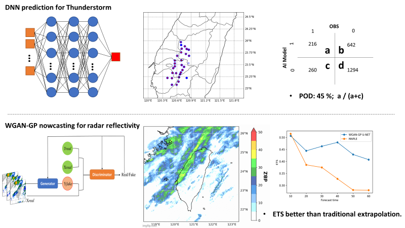

Abstract
Recently due to the improvement of machine learning strategies and computation resources, we attempted to investigate the ability of AI weather prediction that is major in predicting afternoon thunderstorms and radar reflectivity nowcasting.
Regarding the prediction of afternoon thunderstorms, 5 years (2016-2021) of observational station data are used as the training data and 1 year (2022) validation data. We applied the DNN model, which has 4 hidden layers. The parameters of data with VIF higher than 10 are filtered out. The final results show that the AI prediction of afternoon thunderstorms can capture about half of the events.
Regarding radar reflectivity nowcasting, WGAN-GP is used to predict the extrapolation of radar reflectivity. 1-year radar data in winter is applied for training the AI model. The generator is based on theUNET backbone and adding channel and spatial attention and the discriminator isbased on the CNN structure. The final results show that the AI radarreflectivity nowcasting has a higher ETS score than the traditional nowcastingmethod (MAPLE), which represents that the AI model performs much better!
Figure. Illustration of this research.